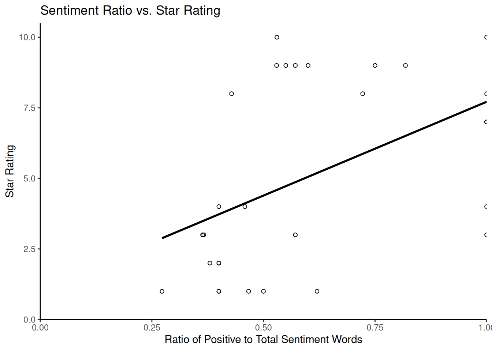
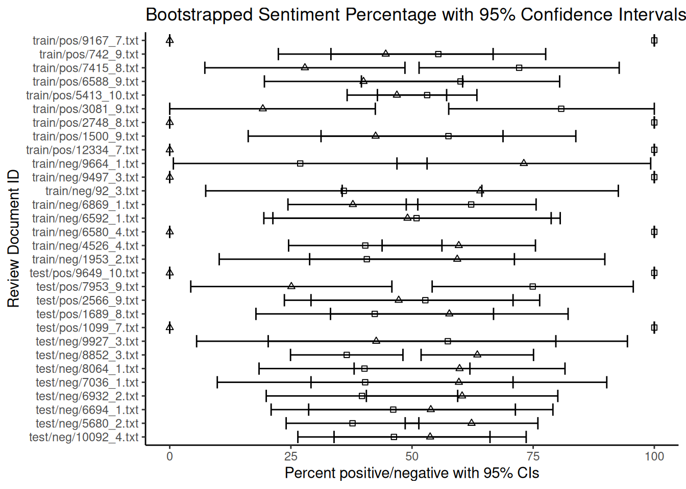
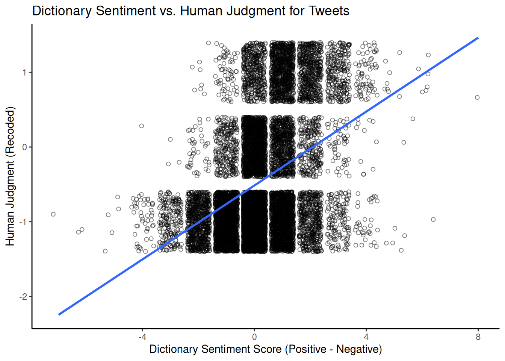
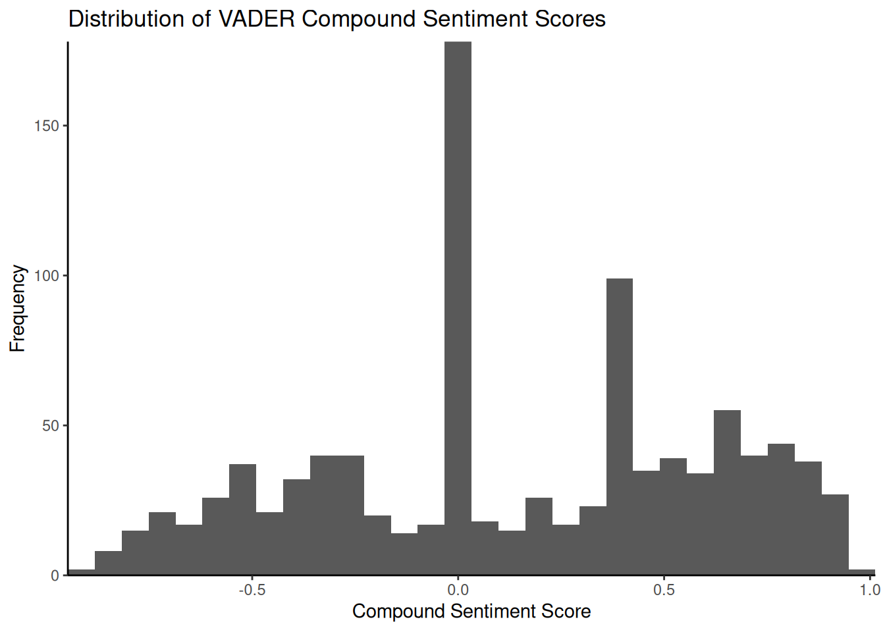
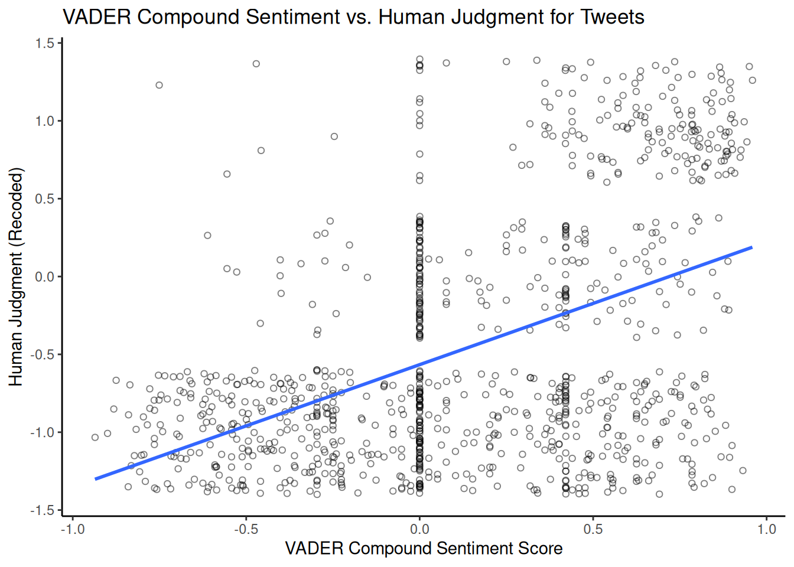

5.2 Sentiment Analysis
The logic of dictionaries extends beyond simple words, as we saw above; we can also use them to provide measures related to scaling, such as the degree of positive or negative sentiment and look at whether a text expresses happiness, anger, positivity, negativity, etc. This can be particularly useful for analysing subjective content such as movie reviews, which we will look at in the first example.
5.2.1 Movie Reviews
Movie reviews often describe a film alongside an explicit opinion or rating. Here, we will use a sample from the Large Movie Review Dataset (data_corpus_LMRD), which contains reviews labelled as either positive or negative and which sometimes have ratings associated with them. As the dataset is large, we will work with a smaller sample of 30 reviews for demonstration purposes. We will sample the corpus using the corpus_sample() function and then preprocess it by tokenising, lowercasing, and removing stop words before creating a document feature matrix (DFM):
library(quanteda.classifiers)
library(quanteda)
# Load the large movie review dataset and sample 30 reviews
data(data_corpus_LMRD)
set.seed(42) # Set seed for reproducibility
reviews <- corpus_sample(data_corpus_LMRD, 30)
reviews_tokens <- tokens(reviews, remove_punct = TRUE, remove_symbols = TRUE, remove_numbers = TRUE,
remove_url = TRUE)
reviews_tokens <- tokens_tolower(reviews_tokens)
reviews_tokens <- tokens_select(reviews_tokens, stopwords("english"), selection = "remove")
reviews_dfm <- dfm(reviews_tokens)The next step is to load a sentiment analysis dictionary and apply it to our film review dfm. Here, we will use the Lexicoder Sentiment Dictionary (LSD2015), which is included in quanteda.dictionaries. This dictionary categorises words as positive or negative. We use the dictionary with dfm_lookup():
library(quanteda.dictionaries)
data_dictionary_LSD2015
results_dfm <- dfm_lookup(reviews_dfm, data_dictionary_LSD2015)
results_dfmThe resulting results_dfm has features corresponding to the categories in the LSD2015 dictionary (e.g., “positive” and “negative”), and the values are the number of words in each category found in each film review. The next step then is to convert the results into a data frame for easier analysis and display:
## doc_id negative positive neg_positive neg_negative
## 1 train/neg/6869_1.txt 19 31 0 0
## 2 test/neg/6694_1.txt 8 7 0 0
## 3 train/pos/6588_9.txt 8 12 0 0
## 4 train/pos/7415_8.txt 5 13 0 0
## 5 test/pos/2566_9.txt 8 9 0 0
## 6 test/neg/5680_2.txt 31 19 0 0Often, movie reviews have an external rating (often in the form of stars or a positive/negative label). In that case, we can see if the dictionary-based sentiment is related to that rating. As the data_corpus_LMRD sample contains these ratings as document variables (docvars), we can extract this easily:
star_data <- docvars(reviews, field = "rating")
# Combine the rating with the dictionary sentiment scores
stargraph <- as.data.frame(cbind(star_data, sentiment$negative, sentiment$positive))
names(stargraph) <- c("stars", "negative", "positive")
head(stargraph)## stars negative positive
## 1 1 19 31
## 2 1 8 7
## 3 9 8 12
## 4 8 5 13
## 5 9 8 9
## 6 2 31 19Now, we can combine the positive and negative counts into a single sentiment score to compare dictionary-based sentiment with star ratings. For this, we take the ratio of positive words to the total number of sentiment words (\(positive / (positive + negative)\)) to avoid division by zero if there are no positive or negative words:
sentiment_ratio <- stargraph$positive/(stargraph$positive + stargraph$negative)
stargraph <- cbind(stargraph, sentiment_ratio)
head(stargraph)## stars negative positive sentiment_ratio
## 1 1 19 31 0.6200000
## 2 1 8 7 0.4666667
## 3 9 8 12 0.6000000
## 4 8 5 13 0.7222222
## 5 9 8 9 0.5294118
## 6 2 31 19 0.3800000Using ggplot2, we can plot the star ratings against these scaled sentiment measures to assess the relationship visually:
library(ggplot2)
ggplot(stargraph, aes(x = sentiment_ratio, y = stars)) + geom_point(shape = 1) +
geom_smooth(method = lm, se = FALSE, color = "black") + scale_y_continuous(name = "Star Rating",
limits = c(0, 10.5), expand = c(0, 0)) + scale_x_continuous(name = "Ratio of Positive to Total Sentiment Words",
limits = c(0, 1), expand = c(0, 0)) + ggtitle("Sentiment Ratio vs. Star Rating") +
theme_classic()## `geom_smooth()` using formula = 'y ~ x'
Finally, we consider how to estimate the uncertainty around our dictionary-based sentiment scores, particularly the percentages of positive or negative words. For this, we use bootstrapping, a statistical technique that calculates the sampling variability of a statistic by resampling the observed data. In the context of text analysis and dictionary methods, bootstrapping can help us quantify the uncertainty in the estimated proportion of words falling into particular dictionary categories within each document. This is particularly useful for understanding the reliability of scores for shorter documents with limited word counts.
The following code demonstrates a bootstrapping approach to estimating confidence intervals for the percentage of positive and negative words in each review. This method involves resampling the word counts within each document based on a multinomial distribution derived from the observed counts. While the code may appear complex, it essentially simulates drawing new sets of words for each document many times based on the proportions of positive and negative words found initially. The core logic is that the apply function with rmultinom simulates drawing new counts for the negative and positive categories based on their observed proportions and the total number of sentiment words in each document. We repeat this process nrepl several times to obtain a distribution of possible percentages for each document under resampling. The standard deviation of these simulated percentages estimates the standard error, which is then used to calculate confidence intervals.
library(ggplot2) # For plotting
library(dplyr)
# Prepare data for bootstrapping: include doc_id and sentiment counts
reviews_bootstrap_data <- sentiment[, c("doc_id", "negative", "positive")]
# Remove rows with zero total sentiment words to avoid division by zero issues
# later
reviews_bootstrap_data <- reviews_bootstrap_data %>%
filter(negative + positive > 0)
# Get the number of documents remaining
nman <- nrow(reviews_bootstrap_data)
# Set parameters for bootstrapping
nrepl <- 1000 # Number of bootstrap replications
# --- Perform Bootstrapping --- We will store the results of each bootstrap
# replication in a list
bootstrap_reps <- vector("list", nrepl)
for (i in 1:nrepl) {
# For each document, simulate drawing word counts from a multinomial
# distribution The number of trials is the total sentiment words in the
# document The probabilities are the observed proportions of
# negative/positive words
boot_counts <- t(apply(reviews_bootstrap_data[, c("negative", "positive")], 1,
function(x) {
total_words <- sum(x)
# Use rmultinom to draw new counts
rmultinom(1, size = total_words, prob = x/total_words)[, 1]
}))
# Calculate the percentage of negative and positive words for this
# replication
total_sentiment_words <- apply(reviews_bootstrap_data[, c("negative", "positive")],
1, sum)
percent_negative <- boot_counts[, "negative"]/total_sentiment_words * 100
percent_positive <- boot_counts[, "positive"]/total_sentiment_words * 100
# Store the percentages for this replication along with doc_id
bootstrap_reps[[i]] <- data.frame(doc_id = reviews_bootstrap_data$doc_id, percent_negative = percent_negative,
percent_positive = percent_positive)
}
# Aggregate Bootstrapping Results and combine results from all replications
# into a single data frame
all_bootstrap_results <- bind_rows(bootstrap_reps)
# Calculate the mean percentage and standard error (SD of replicates) for each
# document
summary_dataBS <- all_bootstrap_results %>%
group_by(doc_id) %>%
summarise(perNegative = mean(percent_negative), NegativeSE = sd(percent_negative),
perPositive = mean(percent_positive), PositiveSE = sd(percent_positive),
.groups = "drop" # Avoid grouping warning
)
# Join with original counts for completeness
dataBS <- reviews_bootstrap_data %>%
left_join(summary_dataBS, by = "doc_id")
# Calculate the 95% confidence intervals (using 1.96 * Standard Error)
dataBS$pos_hi <- dataBS$perPositive + (1.96 * dataBS$PositiveSE)
dataBS$pos_lo <- dataBS$perPositive - (1.96 * dataBS$PositiveSE)
dataBS$neg_lo <- dataBS$perNegative - (1.96 * dataBS$NegativeSE)
dataBS$neg_hi <- dataBS$perNegative + (1.96 * dataBS$NegativeSE)
# Ensure confidence intervals are within the valid range for percentages [0,
# 100]
dataBS$pos_hi <- pmin(dataBS$pos_hi, 100)
dataBS$pos_lo <- pmax(dataBS$pos_lo, 0)
dataBS$neg_hi <- pmin(dataBS$neg_hi, 100)
dataBS$neg_lo <- pmax(dataBS$neg_lo, 0)
head(dataBS)## doc_id negative positive perNegative NegativeSE perPositive
## 1 train/neg/6869_1.txt 19 31 37.79400 6.836395 62.20600
## 2 test/neg/6694_1.txt 8 7 53.87333 12.858476 46.12667
## 3 train/pos/6588_9.txt 8 12 39.99000 10.435938 60.01000
## 4 train/pos/7415_8.txt 5 13 27.89444 10.535295 72.10556
## 5 test/pos/2566_9.txt 8 9 47.25294 12.038145 52.74706
## 6 test/neg/5680_2.txt 31 19 62.28200 6.986078 37.71800
## PositiveSE pos_hi pos_lo neg_lo neg_hi
## 1 6.836395 75.60533 48.80667 24.394665 51.19333
## 2 12.858476 71.32928 20.92405 28.670720 79.07595
## 3 10.435938 80.46444 39.55556 19.535561 60.44444
## 4 10.535295 92.75473 51.45638 7.245266 48.54362
## 5 12.038145 76.34182 29.15230 23.658178 70.84770
## 6 6.986078 51.41071 24.02529 48.589288 75.97471We can then produce a graph showing each review’s estimated percentages of positive and negative words overlaid with their 95% confidence intervals:
ggplot() +
geom_point(data = dataBS, aes(x = perPositive, y = doc_id), shape = 0) + # Plot mean positive percentage
geom_point(data = dataBS, aes(x = perNegative, y = doc_id), shape = 2) + # Plot mean negative percentage
geom_errorbarh(data = dataBS, aes(xmax = pos_hi, xmin = pos_lo, y = doc_id)) + # Error bars for positive
geom_errorbarh(data = dataBS, aes(xmax = neg_hi, xmin = neg_lo, y = doc_id)) + # Error bars for negative
scale_x_continuous(name = "Percent positive/negative with 95% CIs") +
scale_y_discrete(name = "Review Document ID") +
ggtitle("Bootstrapped Sentiment Percentage with 95% Confidence Intervals") +
theme_classic()
Note that the fact that some documents are shorter than others and contain fewer dictionary words introduces more uncertainty to the estimates of the percentages. As can be seen from the overlapping confidence intervals for many documents, the estimated rate of negative words is not statistically different from that of positive words at the 95% confidence level for these reviews. Based on this dictionary and bootstrapping method, the sentiment for these reviews appears to be mixed or uncertain. The width of the error bars provides a visual indication of this uncertainty for each document. While bootstrapping quantifies this uncertainty, its interpretation requires careful consideration of the underlying assumptions.
5.2.2 Twitter
Now, let us turn to another example of sentiment analysis using Twitter/X data. Due to its informal nature and use of slang, hashtags and emoticons, this type of text presents unique challenges, especially when cleaning. Here, we examine sentiment towards several major US airlines based on a dataset of tweets. In this case, researchers scraped data from Twitter and asked participants to classify the sentiment of each tweet as negative, positive or neutral, and if negative, to explain why. The data also includes information about the coders’ confidence levels, the airline in question and the tweets’ metadata. We can download this data from platforms such as Kaggle (e.g. the ‘Airline Sentiment’ dataset), but for ease of use in this example, we will load it directly from GitHub via a URL:
urlfile = "https://raw.githubusercontent.com/SCJBruinsma/qta-files/master/Tweets.csv"
tweets <- read.csv(url(urlfile), stringsAsFactors = FALSE) # Use stringsAsFactors = FALSE to keep text as character
head(tweets)## tweet_id airline_sentiment airline_sentiment_confidence negativereason
## 1 5.703061e+17 neutral 1.0000
## 2 5.703011e+17 positive 0.3486
## 3 5.703011e+17 neutral 0.6837
## 4 5.703010e+17 negative 1.0000 Bad Flight
## 5 5.703008e+17 negative 1.0000 Can't Tell
## 6 5.703008e+17 negative 1.0000 Can't Tell
## negativereason_confidence airline airline_sentiment_gold name
## 1 NA Virgin America cairdin
## 2 0.0000 Virgin America jnardino
## 3 NA Virgin America yvonnalynn
## 4 0.7033 Virgin America jnardino
## 5 1.0000 Virgin America jnardino
## 6 0.6842 Virgin America jnardino
## negativereason_gold retweet_count
## 1 0
## 2 0
## 3 0
## 4 0
## 5 0
## 6 0
## text
## 1 @VirginAmerica What @dhepburn said.
## 2 @VirginAmerica plus you've added commercials to the experience... tacky.
## 3 @VirginAmerica I didn't today... Must mean I need to take another trip!
## 4 @VirginAmerica it's really aggressive to blast obnoxious "entertainment" in your guests' faces & they have little recourse
## 5 @VirginAmerica and it's a really big bad thing about it
## 6 @VirginAmerica seriously would pay $30 a flight for seats that didn't have this playing.\nit's really the only bad thing about flying VA
## tweet_coord tweet_created tweet_location
## 1 2015-02-24 11:35:52 -0800
## 2 2015-02-24 11:15:59 -0800
## 3 2015-02-24 11:15:48 -0800 Lets Play
## 4 2015-02-24 11:15:36 -0800
## 5 2015-02-24 11:14:45 -0800
## 6 2015-02-24 11:14:33 -0800
## user_timezone
## 1 Eastern Time (US & Canada)
## 2 Pacific Time (US & Canada)
## 3 Central Time (US & Canada)
## 4 Pacific Time (US & Canada)
## 5 Pacific Time (US & Canada)
## 6 Pacific Time (US & Canada)After cleaning the text data in the data frame, we transform it into a quanteda corpus object, specifying that our text is in the text field. We then proceed with the standard quanteda preprocessing steps: transforming our corpus into a tokens object and removing stop words:
corpus_tweets <- corpus(tweets, text_field = "text")
data_tweets_tokens <- tokens(corpus_tweets, remove_punct = TRUE, remove_symbols = TRUE,
remove_numbers = TRUE, remove_url = TRUE, remove_separators = TRUE, split_hyphens = FALSE,
split_tags = FALSE)
data_tweets_tokens <- tokens_select(data_tweets_tokens, stopwords("english"), selection = "remove")
data_tweets_dfm <- dfm(data_tweets_tokens)Now, we can apply our sentiment dictionary. As discussed earlier, we can do this in two ways: by applying it to the dfm using dfm_lookup() or to the tokens object using tokens_lookup(). Both should give similar results for single-word entries, but we have to use tokens_lookup() to correctly identify multi-word expressions. As the LSD2015 dictionary contains some multi-word expressions, using tokens_lookup() and then converting the result to a dfm is the preferred approach to ensure that all dictionary entries are captured:
results_tokens <- tokens_lookup(data_tweets_tokens, data_dictionary_LSD2015)
# Convert the resulting tokens object (with categories) to a dfm
results_dfm <- dfm(results_tokens)
# Convert the dfm to a data frame for analysis
results_df <- convert(results_dfm, to = "data.frame")Now, let us see how well our dictionary-based sentiment matches the human-assigned sentiment labels in the original dataset. We recode the human-assigned airline_sentiment labels from our original dataset into numerical values for easier comparison (e.g. positive = 1, negative = -1, neutral = 0):
library(car)
labels <- tweets$airline_sentiment
sentiment_numeric <- car::recode(labels, "'positive'=1; 'negative'=-1; 'neutral'=0")
print(table(sentiment_numeric))A quick look at the table shows how human-assigned sentiment is distributed. Perhaps not unexpected, negative tweets about airlines are more common than positive ones. We now want to combine this data with the output of our dictionary analysis to calculate an overall sentiment score for each tweet. One common method is subtracting the negative score from the positive score (positive minus negative). A higher resulting score indicates a more positive dictionary-based sentiment:
comparison_df <- as.data.frame(cbind(results_df$positive, results_df$negative, sentiment_numeric))
names(comparison_df) <- c("positive_dict", "negative_dict", "human_sentiment")
# Calculate the sentiment difference from dictionary counts
comparison_df$sentiment_difference_dict <- comparison_df$positive_dict - comparison_df$negative_dict
head(comparison_df)## positive_dict negative_dict human_sentiment sentiment_difference_dict
## 1 0 0 0 0
## 2 0 1 1 -1
## 3 0 0 0 0
## 4 1 3 -1 -2
## 5 0 1 -1 -1
## 6 0 1 -1 -1Finally, we can visualise the relationship between human-assigned and dictionary-based sentiment scores using a scatter plot. Since human sentiment is categorical (or comprises a small set of numerical values), adding jitter to the scores can help to visualise density. A simple linear regression line can illustrate the overall trend. We will use the results from the tokens_lookup() function, as this handles multi-word expressions correctly.
library(ggplot2)
ggplot(comparison_df,
aes(x = sentiment_difference_dict, y = human_sentiment)) +
geom_jitter(shape = 1, alpha = 0.5) + # Add jitter and transparency
geom_smooth(method = lm, se = FALSE) + # Add linear regression line
scale_x_continuous(name = "Dictionary Sentiment Score (Positive - Negative)") +
scale_y_continuous(name = "Human Judgment (Recoded)") +
ggtitle("Dictionary Sentiment vs. Human Judgment for Tweets") +
theme_classic()
This graph visually shows the correlation between dictionary-based and human-assigned sentiment scores. A positive slope suggests that human coders rate tweets with higher positive-minus-negative dictionary scores as more positive. The strength of this relationship (e.g., measured by the correlation coefficient or \(R^2\) from the linear model) indicates how well the dictionary captures the sentiment as perceived by humans in that particular domain.
5.2.3 VADER
Another popular dictionary-based approach for sentiment analysis in social media contexts is VADER (Hutto & Gilbert, 2014) (Valence Aware Dictionary and sEntiment Reasoner). Unlike a simple dictionary lookup, VADER is a rule-based model that considers punctuation, capitalisation, emojis, and negation to determine sentiment intensity. It provides a continuous sentiment score ranging from -1 (most negative) to +1 (most positive) and scores for the proportions of positive, negative and neutral sentiment. Unlike most dictionaries, which rely on the judgement of a single expert or small group, the VADER dictionary was developed and validated using crowdsourced human judgements.
We can use the vader package to use VADER in R; let’s test it again using the airline tweet data. First, we reload the data and select a subset of tweets to work with to speed up processing, converting the text into a character vector:
urlfile = "https://raw.githubusercontent.com/SCJBruinsma/qta-files/master/Tweets.csv"
tweets_vader <- read.csv(url(urlfile), stringsAsFactors = FALSE)
# Select a sample of 1000 tweets for demonstration
set.seed(42)
tweets_sample_vader <- tweets_vader[sample(nrow(tweets_vader), 1000), ]
text_vader <- tweets_sample_vader$text # Extract the text columnWe then apply VADER to our tweets using the vader_df() function, which is designed to work with a character vector or data frame of text.
VADER then provides us with a data frame consisting of several variables. The most important ones are:
text: The original text of the tweet.compound: A single, aggregated sentiment score ranging from -1 to +1. This is often the primary score we would usepos,neg,neu: The proportion of the text that falls into positive, negative, and neutral categories, respectively.word_scores: (If requested) Individual sentiment scores for each word.
To get a better idea of the output, we can look at the distribution of the compound sentiment scores using a histogram:
library(ggplot2)
ggplot(data = results_vader, aes(x = compound)) + geom_histogram(bins = 30) + scale_x_continuous(name = "Compound Sentiment Score",
expand = c(0, 0)) + scale_y_continuous(name = "Frequency", expand = c(0, 0)) +
ggtitle("Distribution of VADER Compound Sentiment Scores") + theme_classic()
The histogram illustrates the frequency of tweets across the range of composite sentiment scores. In this dataset, a significant proportion of tweets tend to cluster around a neutral score (\(0\)), potentially due to the presence of purely informative tweets or the absence of strong emotional language. Examining tweets with scores close to zero can help us understand why they are classified as neutral by VADER. Tweets such as ‘@JetBlue Counting on your flight \(989\) to get to DC!’ may lack explicit positive or negative language and, therefore, receive a neutral or near-neutral composite score. As before, we can compare the VADER composite score with the human-assigned sentiment labels:
vader_comparison_df <- data.frame(vader_compound = results_vader$compound, human_sentiment = sentiment_numeric[as.numeric(rownames(tweets_sample_vader))])
vader_comparison_df <- na.omit(vader_comparison_df)
ggplot(vader_comparison_df, aes(x = vader_compound, y = human_sentiment)) +
geom_jitter(shape = 1, alpha = 0.5) + # Add jitter and transparency
geom_smooth(method = lm, se = FALSE) + # Add linear regression line
scale_x_continuous(name = "VADER Compound Sentiment Score") +
scale_y_continuous(name = "Human Judgment (Recoded)") +
ggtitle("VADER Compound Sentiment vs. Human Judgment for Tweets") +
theme_classic()## `geom_smooth()` using formula = 'y ~ x'
Comparing this plot with the previous one using LSD2015 provides us with some additional insight into which dictionary/approach better matches human judgement for this dataset.